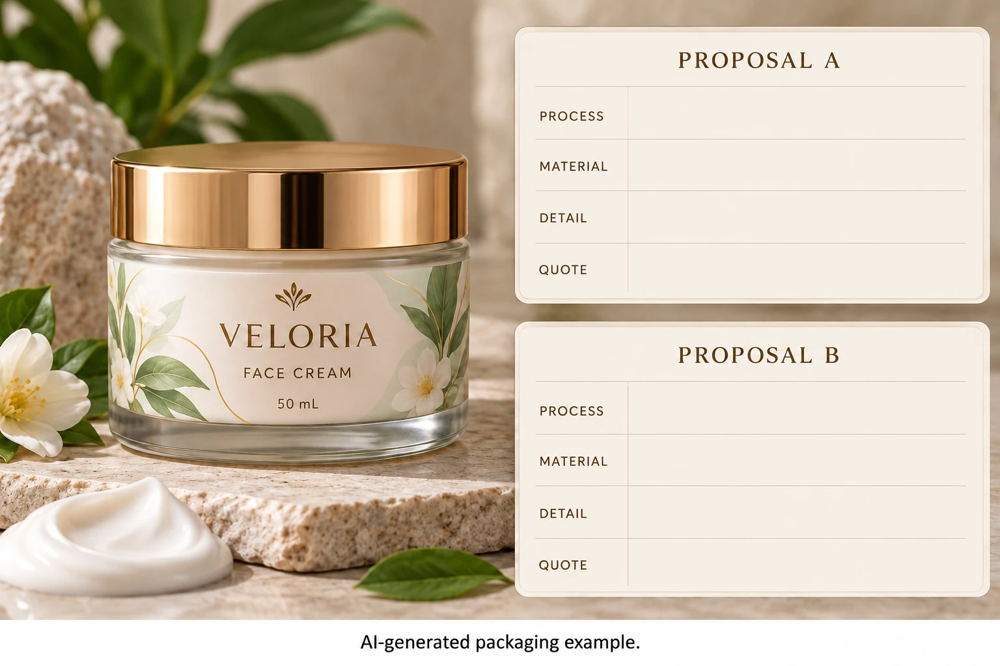

Get past the shared word foil
Ask the converter to name the proposed transfer process and identify the reference sample. KURZ's packaging overview distinguishes hot stamping, cold transfer and digital transfer as different finishing routes. Their presence in one manufacturer's portfolio does not make them interchangeable or establish YT Labels' availability for your construction.
Record the supplier's description rather than relabeling every reflective sample with the process you expected. A printed metallic effect is a separate proposal; use the foil-versus-metallic-ink guide if that fundamental distinction remains open.
The useful output of this first step is a named route tied to a physical reference and the proposed job. It is not a ranking of premium and ordinary decoration.
Identify the feature that must be reproduced
Mark the actual decorative object: lettering, a botanical line, a solid accent or a broad area. Explain the visual objective and which surrounding elements matter. A large reflective swatch cannot answer a question about a small detailed mark beside fine print.
Ask the production party to review the artwork against each supported proposal. Obtain any necessary adjustment and identify who will approve it. This article gives no shared minimum line, registration allowance or coverage rule for hot and cold routes.
Preserve the design's purpose when comparing changes. If one proposal requires a much simpler motif, show that revised artwork to the brand. It may be acceptable, but the change should not disappear inside a claim that both quotes reproduce the same design.
Compare complete constructions
Identify face material, relevant print, transfer product and protective finishing arrangement for each sample. Ask whether it represents the proposed construction or only the desired visual direction. A paper label reference need not establish the appearance of a film label on an amber bottle.
Where possible, compare the same artwork on the intended container under consistent viewing conditions. If that is unavailable, state the differences and decide which additional evidence matters. Do not attribute every visual change to hot versus cold transfer when the stock, artwork and lighting also differ.
Include later operations in the brief. Application, handling, coding or another finish may require a separate compatibility review. A pleasing foil appearance is one part of acceptance, rather than permission to skip those relevant questions.
Ask what the quotation includes
Request actual terms for the identified proposals: quantity by design, sample scope, preparation, any tooling, finishing, delivery format and relevant timing. Avoid universal claims that one route is always cheaper for a particular run size or always faster.
If a quote includes reusable assets, identify them and the actual conditions. A previous foil sample or artwork approval does not establish today's production slot, available transfer product or tooling arrangement. Ask what the current offer assumes.
Keep an unsupported option out of the price ranking. A supplier that does not offer one route has not supplied an equivalent alternative merely because its brochure mentions foil. Ask for its supported proposal, then decide whether that proposal is worth evaluating.
| Decision field | Evidence for each route | Hold point |
|---|---|---|
| Process | Supplier's named transfer route | Quote and sample cannot be connected |
| Construction | Relevant stock, print and final finish | Sample represents another combination |
| Artwork | Critical feature and supported correction | Brand has not reviewed the changed design |
| Appearance | Identified sample and viewing context | Screen image is the only reference |
| Later operation | Relevant application or handling requirement | Compatibility question remains open |
| Quote | Actual inclusions, preparation and quantity basis | Comparison uses invented setup assumptions |
| Release | Accepted scope and named approver | A general gold approval hides an unresolved route |
Complete identity and artwork review first. Obtain proportionate sample evidence, then compare the acknowledged commercial scopes. If neither sample answers the decisive feature, request that evidence before choosing a full order.

Let the sample and actual job decide
In one hypothetical project, an established transfer route already has an identifiable relevant sample that meets the brand's visual brief. Reopening the process solely because another name sounds more premium can create work without a demonstrated benefit.
In another, the existing reference does not reproduce the intended detail on the proposed construction. Evaluating another supported route or revising the design can be sensible. The decision follows the actual evidence and quote, rather than a blanket preference for hot or cold foil.
The candle finish guide addresses wider visual coordination. For a cosmetic label inquiry, send the bottle, artwork, marked foil feature, quantity per design and reference sample details. Use the contact form to draft a request; send files by email or WhatsApp. Ask which identified route the proposed sample and price actually cover.